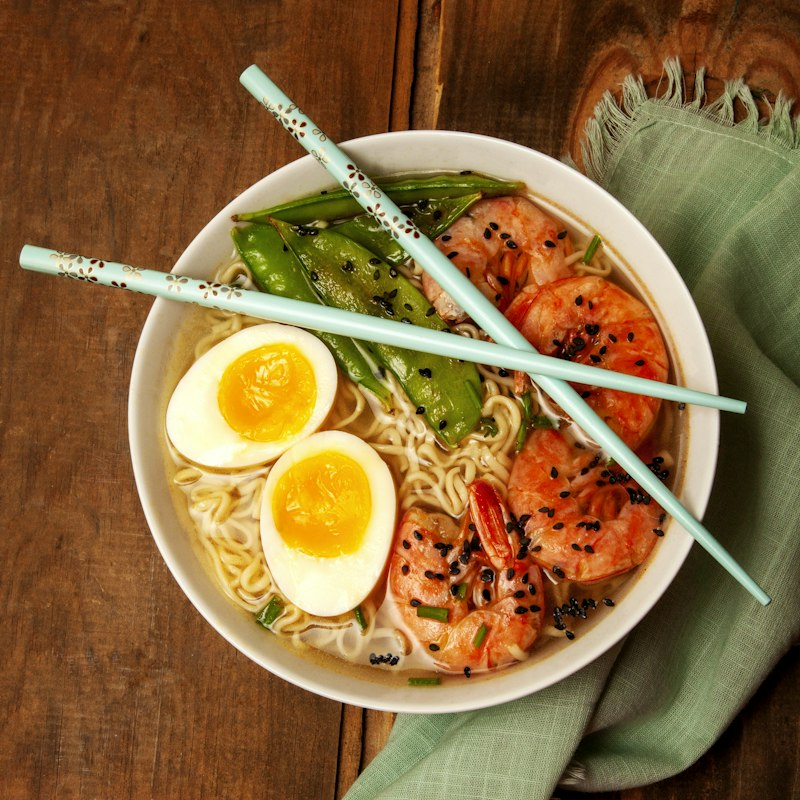
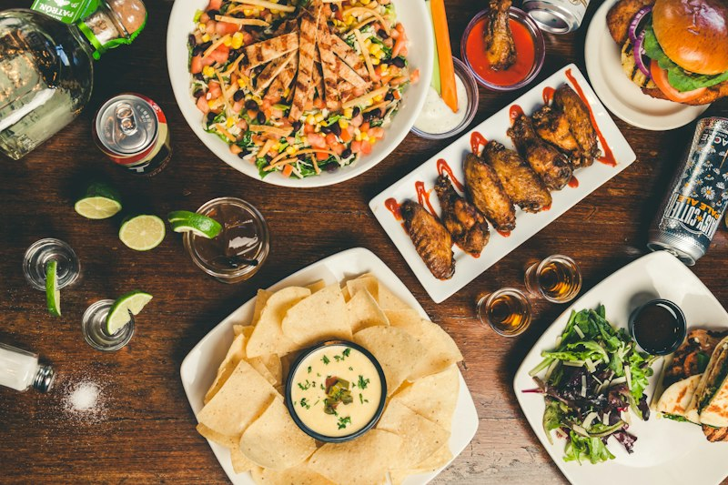
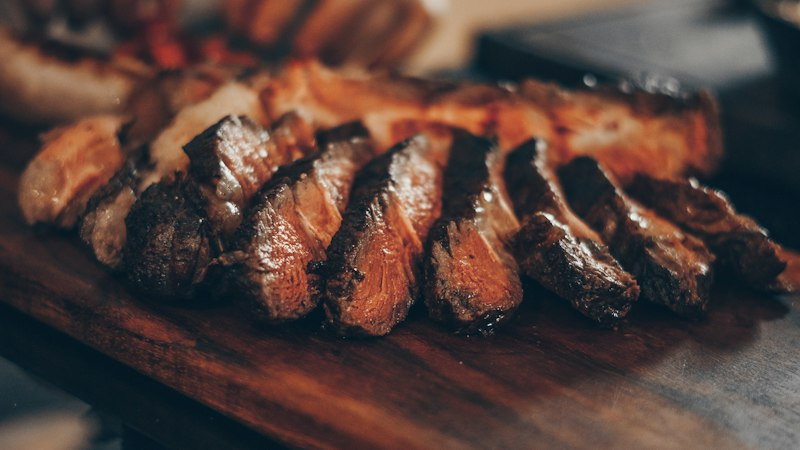
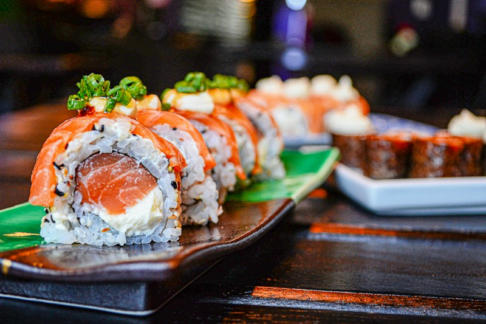

🇯🇵 2027 日本東京＋野澤溫泉滑雪 互動手冊
成員：小白、Alan（全程 1/14–1/25） ＋ 傑若米 (怪寶貝)（1/20–1/25 合體加入）｜已完整整合 Google 試算表筆記、交通時程、即時檢核表與預算精算！

🌋 1/21 (四) 東京迪士尼海洋・2027 最新制度＆25週年最終章攻略
✨ 海洋 25 週年 Sparkling Jubilee 最終章 (1/13–3/31)⚠️ 2027 最新制度重點：「40週年優先入場卡 (PP)」已於 2026/8/31 結束，且 「夢幻泉鄉免費 Standby Pass」已廢除！現在夢幻泉鄉全天自由進出、所有設施皆可直接現場排隊，搭配 付費 DPA 與 Single Rider 單人通道 就是最強無敵組合！
🏆 必玩 10 大設施分級表（點擊可打勾紀錄已玩！）
依推薦優先級 Tier S ➔ Tier A ➔ Tier B 排序，點擊卡片即可標記完成。
⏰ 1/21 (四) 全天精準時間分配（由裡往外玩・避開所有人潮！）
動線設計：開園直衝最深處「夢幻泉鄉」➔ 失落河三角洲 (Single Rider) ➔ 阿拉伯海岸 ➔ 神秘島 ➔ 地中海港灣 (25週年港灣秀＋翱翔) ➔ 美國海濱 ➔ 夜間水上大秀 ➔ 提前離園回淺草雷門吃居酒屋！
♨️ 野澤溫泉 13 外湯巡禮・互動集章卡
點擊卡片即可蓋章紀錄！已依每晚住宿「源六」與滑雪後順路動線分組（自動儲存進度）。

日本野澤溫泉滑雪不自駕全攻略：滑雪場、交通、住宿、美食、購物懶人包
對想去野澤滑雪的人來說，最大疑問往往是：「不自駕真的玩得起來嗎？交通會不會很麻煩？」 事實上，野澤溫泉是全日本數一數二最適合不自駕的滑雪勝地！百年日式老街聚落、直通雪場的電動步道 Yu-road、免費循環接駁車與 13 外湯，帶你一篇搞定所有行前功課！
1. 日本野澤溫泉是什麼樣的地方？
野澤溫泉（Nozawa Onsen）位於日本長野縣北部，是一座開湯歷史超過 1,000 年的古老溫泉鄉，同時也是全日本頂級天然粉雪滑雪場之一。
有別於白馬谷（Hakuba Valley）由 10 座分散各處的獨立雪場組成，野澤溫泉是一座「超大型單一雪場」！你不需要每天搭車在不同雪山之間奔波換乘，只要一張纜車票，就能暢滑整座毛無山，從海拔 1,650 公尺山頂一路滑降到山腳溫泉街，高低落差達 1,085 公尺！

2. 野澤滑雪季節與最佳前往時間
3. 野澤滑雪適合新手嗎？各大雪區難度整理
野澤溫泉地形豐富，綠線（初級）佔 40%、紅線（中級）佔 30%、黑線（高級）佔 30%，無論第一次滑雪的新手還是熱愛野雪的高手都能玩得盡興：
寬度達 100 公尺、平均斜度僅 8～12 度的超平坦長雪道，長達 2 公里兩旁針葉林積雪，安全好滑、風景如畫！
設有滑雪學校、兒童專用玩雪場與初學專用魔毯，直通村內「Yu-road」自動電扶梯電動步道，交通最輕鬆。
2020 年全新落成 10 人座高速箱型纜車，配備全景抗反光玻璃，8 分鐘即可無縫直達海拔 1,400m 山頂站！
標高 1,650m 最高峰！擁有野澤最棒的非壓雪天然粉雪林間道，山頂 Yamabiko 餐廳的【銷魂野澤菜燒肉飯】全山第一！
沿著山脊稜線一路奔馳 3,500 公尺，左手邊俯瞰長野北信濃群山與雲海，視野極度震撼，拍滑雪影片首選！
最大傾斜度高達 39 度的非壓雪大蘑菇巨石陣，是高級雪友考驗控板技術與立體彈跳的極限戰場！
4. 不自駕適合去野澤滑雪嗎？（與白馬對比）
答案是：超級適合，甚至比白馬更友善、更純粹！
| 比較項目 | 野澤溫泉 (Nozawa) | 白馬谷 (Hakuba Valley) |
|---|---|---|
| 雪場型態 | 單一超大雪場，一張票暢滑所有山頭 | 10 座分散雪場，天天搭車換山頭 |
| 不自駕村內交通 | 徒步即可逛遍老街＋免費循環巴士＋Yu-road 電梯 | 各雪場間距離遠，極度仰賴 HV 接駁巴士班次 |
| 溫泉與文化氛圍 | 13座百年免費外湯＋道祖神火祭，道地日式風情 | 歐美度假村風格、飯店私人溫泉為主 |
| 夜生活與覓食 | 溫泉街密集居酒屋、酒吧、燒肉，散步 5 分鐘即達 | 餐廳分散（白馬村中心／Echoland），需搭車 |
5. 如何前往野澤溫泉村？（不自駕大眾運輸指南）
2. 抵達飯山站後，走至 千曲川口 4 號巴士站牌，搭乘專用直達接駁巴士 Nozawa Onsen Liner，約 25 分鐘 即可直達野澤溫泉中央總站（單程票價 ¥600 日圓，上車可直接刷 Suica / PASMO IC卡！）。
6. 不自駕去野澤，行李和雪具怎麼辦？
7. 去野澤滑雪建議住哪？（3 大住宿分區）
如：NOZAWA GENROKU 源六、朝日屋。
生活機能稱霸！走路 1 分鐘到大湯、便利商店、居酒屋、土產街，搭 Yu-road 電梯上雪場輕鬆愜意。
如：Schneider 飯店、雪場周邊山莊。
早晨出門套上雪板直衝纜車，但夜間想逛溫泉老街吃居酒屋需走下坡或等接駁車。
如：傳統日式溫泉民宿 (Minshuku)。
環境幽靜、氣氛質樸溫馨，緊鄰中尾之湯與新田之湯，搭乘免費接駁巴士往返雪場。
8. 野澤村當地交通攻略（Yu-road ＆ 免費接駁巴士）
在野澤村內移動主要依靠兩大神器：「遊湯步道 (Yu-road)」 與 「村內免費循環接駁巴士」：
9. 野澤溫泉 13 外湯巡禮與泡湯禮儀守則
10. 野澤村在地必吃美食推薦
11. 野澤伴手禮 ＆ 班老大風格行前結語
野澤溫泉沒有大型現代商場的喧鬧，卻完整保留了昭和日本的質樸溫度與天然粉雪天堂。不自駕也能搭乘新幹線與直達接駁車輕鬆抵達，穿著浴衣踩著木屐在雪地漫步泡湯，這才是最道地的日本滑雪冬日回憶！
🍓 1/23 (六) ちあきのいちご園（Chiaki's Strawberry Farm）官網完整攻略
📍 千葉県大網白里市南横川 3490（JR 外房線「永田駅」步行 10 分鐘）｜⏱️ 09:30–10:45（60分鐘完熟草莓吃到飽）
🛍️ 1/23 MITSUI OUTLET 木更津 專櫃分區
10:00–20:00🥩 2027 試算表收錄・必吃美食圖文清單
東京・野澤・鎌倉精選
「有去秋葉原的話 可以吃這家厚切鐵板牛排！」（1/20 D7 晚餐）

上野排隊名店！醇厚鴨肉汁＋丸太白蔥高湯醬油拉麵（1/15 D2 或 1/20 D7 午餐首選）。

石板現烤半熟炸牛排配山藥泥麥飯（1/22 D9 富士山回新宿犒賞晚餐）。

1/16 和牛亭 A5 信州牛壽喜燒、1/19 びっきゃ燒肉慶功、1/23 前男友燒肉！
1/23 09:30 完熟草莓 60 分鐘吃到飽！必採糖度破20度黑草莓「真紅の美鈴」與栃乙女！

1/24 D11 鎌倉小町通在地知名生吻仔魚雙色丼／天婦羅丼，鮮甜回甘！
台灣人日本配 JINS 震撼省錢實測 ＆ 取件運送完整指南
📜 2027 東京野澤行前最高守則（強制規定・絕不可違規！）
🛒 試算表必買願望清單（點擊即可打勾完成！）
收錄 AEON 超市 YUDA 優格、Speedo 潮流泳鏡、JINS 配鏡與戶外裝備等。
💰 2027 旅費精算總結（每人已付/預估款項）
🏨 住宿安排與訂金扣款日程表
依試算表登記之各飯店付款方式與注意事項整理。
| 日期 | 住宿飯店名稱 | 入住成員 | 每人每晚費用 | 重要付款與退改規則 |
|---|---|---|---|---|
| 1/14 (D1) | APA 飯店 巢鴨站前 | 小白、Alan | NT$ 1,640 | 含早餐、大浴場人工溫泉 |
| 1/15–1/19 (D2–D6) | NOZAWA GENROKU (源六) 共5晚 | 小白、Alan | NT$ 1,870 (5晚共 NT$9,350) | 現場結算；早餐 ¥1,500/人 (07:30統一供餐)、晚餐 ¥4,000/人 (18:00統一開飯)；需於 2 天前 09:00 前預訂；1/17、1/20 不供晚餐 |
| 1/20–1/21 (D7–D8) | 東京淺草雷索爾奢華飯店 (RESOL POSHTEL) | 小白、Alan、傑若米 | NT$ 1,128 (2晚共 JPY 34,200) | ⚠️ 1/16 會先預扣信用卡 NT$ 6,768 訂金，退房時歸還；現場到店付款 JPY 34,200（3人分攤） |
| 1/22–1/23 (D9–D10) | 安心小宿 東京滿新宿 (Anshin Oyado) | 小白、Alan、傑若米 | D9 NT$ 1,200 (3600/3) D10 NT$ 1,900 (5700/3) |
⚠️ 已訂不可退款！含免費早餐、咖哩飯、酒水喝到飽與人工溫泉大浴場 |
| 1/24 (D11) | 羽田機場 T3（泉天空之湯 / 睡機場） | 小白、Alan、傑若米 | NT$ 0 | 「越晚到越好！」可付費進 24H 泉天空之湯泡露天溫泉＋蒸氣室休息 |
✅ 行前關鍵訂票與預約時間軸
點擊項目即可打勾標記完成狀態（自動記錄於瀏覽器）。